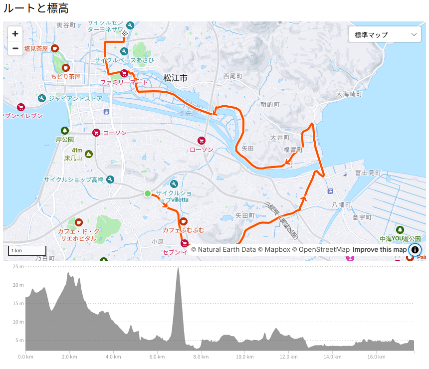

お散歩カメラ 2024-10-26

今朝の松江市の最低気温は15℃弱，最高気温は22℃ちょっとと過ごしやすい日。 ただ自転車に乗る際はパーカを羽織っていこうか悩むところ。
考えた末にパーカはスリングバッグに入れて出掛けたのだが，結局使わなかった。 朝晩の通勤時はともかく，昼間のパーカはまだ早かったか。
中海大橋から中海を臨む
松江市を南北に分ける大橋川に架かる橋で唯一渡ったことがないのが中海河口付近に架かる中海大橋。 というわけで，今回はこの中海大橋を渡ってみることにした。 ついでに中海も眺めていこう。
ルートはこんな感じ。

竹矢から中海大橋を北上し，そこから川沿いを西進しつつ最後は学園通り付近にある天下一品でラーメンをすするコース。 色々と寄り道している。
最初の方はいつもの慣れた道なのですっ飛ばして，いきなり中海大橋南詰め。
中海大橋はそこそこ勾配がある。 つっても最大で8％ほどらしいけど。 この程度なら私の貧弱な脚力でもなんとかなるだろう。
橋の両側に自転車通行可の歩道がある。 北上するなら右側の歩道を通るか。
おー。 いい眺め。 右側が大橋川河口。 ちうかほぼ中海。
橋を渡って改めて中海を眺めてみる。
松江市内の東側と北側は（遊びの）テリトリから外れてるので（自転車では）ほとんど行ったことがないんだよね。 特に東側については来年か再来年に中海半周（自転車で大根島に渡って，そのまま中海の北側を周るコース）を計画しているので（今はまだ体力が足りないので行けない），実際に走ってルートを検証していきたいと思っている。
最後に中海大橋を振り返ってみた。
矢田の渡し
さて昼飯を食いに学園通りに行こう。
途中にある矢田の渡し。
矢田の渡しと南岸を結ぶ水路は「出雲風土記」にも記述がある古代からの交通の要所だったらしい（先月の講演会でも言及があった）。 しかも矢田の渡し付近には矢田遺跡もある。 これはいつか見学に行きたいと思っている。
ちなみに矢田の渡しは渡し船としては休業中だが（中海大橋と縁結び大橋ができたので利用者が激減したらしい），観光用に遊覧船をチャーターできるそうな。
ひさしぶり天下一品
さて，ひさしぶり天下一品。
ようやくお腹が落ち着いた。
腹ごなしに天一付近の朝酌川の河川敷に行ってみたら，一面コスモスが咲いていた。
接写できるカメラ・レンズは持ってないので，スマホの機能で意図的にぼかしを入れてみたが，めっさ不自然になってしまった（笑）
後で調べたら「朝酌川河川敷フラワープロジェクト」というのがあるらしい。
この活動を毎年やってるようだ。 フォトコンテスト もやってるそうだが，レギュレーションとか応募方法とか面倒くさそうなのでパス（笑）
道の駅 秋鹿なぎさ公園
時計を見たらまだ13時過ぎだったので，松江の西にある道の駅「秋鹿なぎさ公園」へ行ってみるか。 佐太神社を経由してのんびりサイクリング。
道の駅に到着。
今日の秋鹿なぎさ公園はお客さんも多く，ヨットやスワンがいくつも出てたみたい。
いい時間になったので帰るか。
今日の総移動距離は77km。 少しずつ走れるようになってきたね。
参考

- Canon コンパクトデジタルカメラ PowerShot ZOOM 写真と動画が撮れる望遠鏡 PSZOOM
- キヤノン (Release 2020-12-10)
- エレクトロニクス
- B08L4WKDZ7 (ASIN), 4549292179675 (EAN)
- 評価
望遠鏡型コンパクトデジカメ。メモリと充電器（要 Power Delivery）は別に用意する必要がある。使い勝手はまぁまぁ。

- GARMIN(ガーミン)Edge Explore 2 Power サイクルコンピューター【日本正規品】
- ガーミン(GARMIN) (Release 2022-09-22)
- スポーツ用品
- B0BD7FGVR6 (ASIN), 0753759310660 (EAN), 753759310660 (UPC)
- 評価
Garmin 製のルート探索・ナビゲーション特化のサイコン。タッチパネル助かる。充電ポートは USB-C (not PD)。また別売りの変換ケーブルを使いモバイルバッテリからパワーマウント経由で給電することもできる。ライドタイプが「ロード」「屋内」「グラベル」の3種類しかない。 Live Segment 非対応。

- モバイルバッテリー 軽量 小型 薄型 【業界157g超軽量モバイル・バッテリー】10000mah 大容量 22.5W急速充電 タイプC出力 2.4A出力 PD&QC3.0対応 Type-C/USB出力ポート PSE認証済 iPhone/Android各種対応 (ブラック)
- MOXNICE
- B0C5HLDYSM (ASIN)
- 評価
コンパクトでランニングポーチ等に楽々入る。 Power Delivery 対応。

- [クローム] ボディバッグ KADET BXRF_BLACK XRF (現行モデル) カデット マックス ブラック エックス リフレクティブ 15L リフレクター 防水
- CHROME
- ウェア&シューズ
- B0BQQMVWBB (ASIN), 0841916176775 (EAN), 841916176775 (UPC)
- 評価
使い勝手についてはこの動画を参照のこと。たくさんの内ポケットで仕切られているのがいい。容量は15Lで，16インチノートPCが入る。取っ手も付いていて仕事でも使えそう。3点ストラップ。防水仕様。オモテ面は光を反射しやすい素材を使っていて，夜間でもクルマから視認しやすい（らしい）。